Introduction
This lab was designed to provide hands-on experience with vulnerability assessment using Tenable Nessus in a controlled environment. The goal was to build a small isolated network, discover live hosts, perform both non-credentialed and credentialed vulnerability scans, and analyze the differences in visibility between the two approaches.
For the lab environment, I deployed Tenable Nessus on Ubuntu, powered on a Metasploitable2 host, and also included my Domain Controller on the same lab network for discovery purposes. Since Metasploitable2 is intentionally vulnerable and ideal for demonstrating exposure across multiple services, it became the primary focus of the assessment.
Project Goals
- Deploy and configure Nessus in a small isolated environment
- Validate host connectivity and perform host discovery
- Run a non-credentialed vulnerability assessment against Metasploitable2
- Run a credentialed vulnerability assessment and compare the results
- Review critical findings and discuss remediation considerations
Lab Setup
To initialize the project, I downloaded and installed Tenable Nessus on Ubuntu. I also powered on Metasploitable2, which contains numerous intentionally vulnerable services, and powered on my Domain Controller so it could also appear during host discovery.
I then created a host-only network adapter so that the Ubuntu Nessus system would communicate only with the Metasploitable and Domain Controller systems for the purpose of this lab. This helped keep the environment isolated and focused strictly on the intended scan targets.
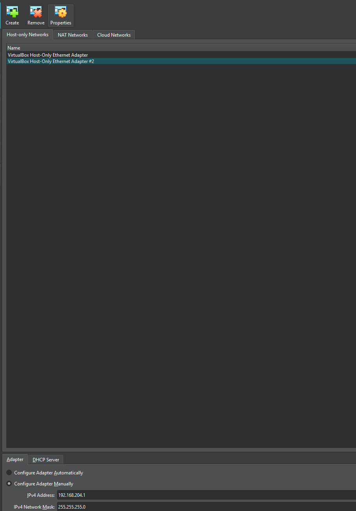
Once the network was configured, I logged into the hosts and verified that they could communicate with the Tenable Nessus host.
Since this was a small environment, I already knew what I was scanning and which devices were present on the network. In a real-world environment, however, one of the first priorities would be identifying how many devices are on the network and what those devices are before launching broader vulnerability assessments.
Host Discovery Scan
A strong starting point for this is a Host Discovery scan. To initialize host discovery, I selected New Scan from the Nessus dashboard.
Once clicked, I selected the Host Discovery scan template.
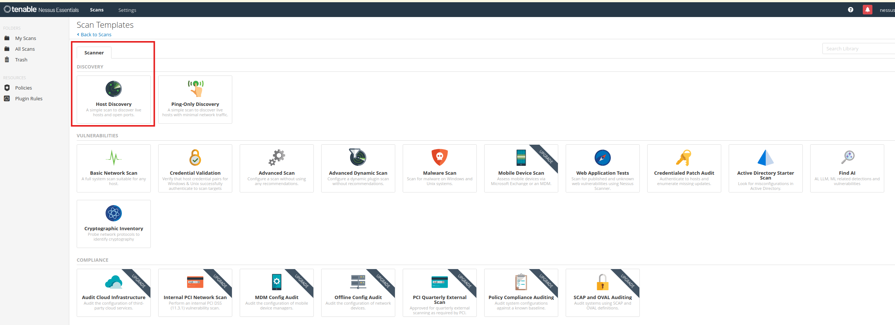
From there, Nessus provides options such as the scan name, description, folder, and targets.
For the targets, I entered 192.168.204.0/24 because I wanted to discover all hosts on that subnet. Nessus also provides options to scan ports and gather additional information, but that was not the focus of this stage.
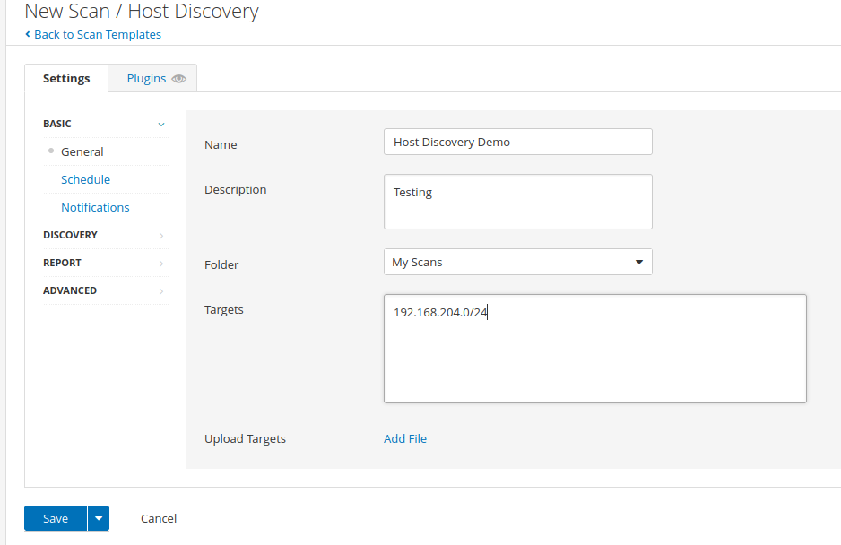
Once the settings were configured, I saved the scan and launched it.
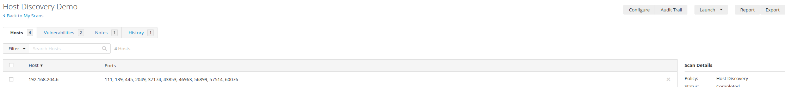
After the scan completed, Nessus successfully identified both the Domain Controller and Metasploitable hosts on the network.
For this lab, since Metasploitable is intentionally packed with vulnerabilities, I chose to focus the remainder of the assessment on that host.
Non-Credentialed Basic Network Scan
As shown in the dashboard, Nessus provides multiple scan options that can be run against identified hosts. For this part of the lab, I selected a Basic Network Scan.
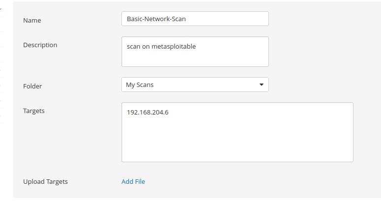
As shown above, I configured the scan so that it would target only the Metasploitable host.
On the left-hand side of the configuration menu, Nessus also provides options to schedule recurring scans. This would be useful in a production environment where regular assessments are required. Nessus also supports SMTP configuration for notifications, allowing scan results or status updates to be sent automatically.
Within the Discovery tab, I configured how Nessus should determine whether the host is alive. For this scan, I selected Port scan (all ports) because I wanted visibility into all reachable services and open ports on the target.
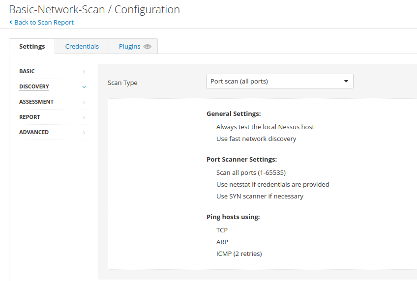
In the Assessment tab, Nessus provides the option to scan for web applications as well. For the sake of lab scope and time, I kept these settings at their defaults.
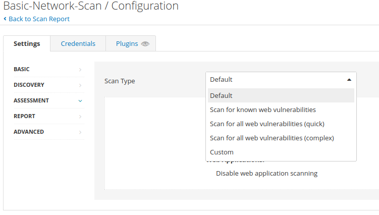
Next, in the Credentials tab, Nessus provides the option to authenticate to the host. Supplying valid credentials allows the scanner to perform additional checks that are not possible during a standard external, non-credentialed scan.
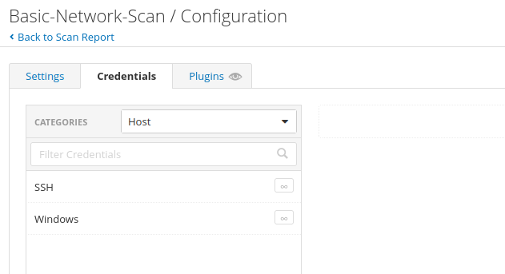
For this first scan, I intentionally left the credentials blank. My plan was to first complete a non-credentialed scan, then run a second scan with credentials so that I could analyze the differences between the two approaches.
Under the Plugins tab, Nessus shows the actual checks it performs to identify vulnerabilities and misconfigurations.
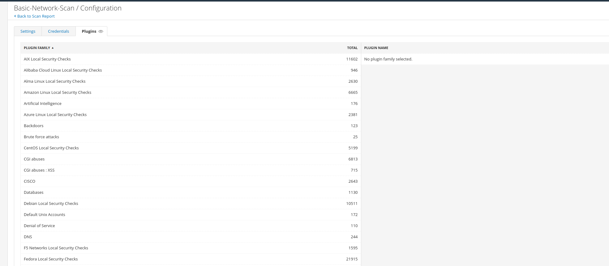
Once the scan settings looked correct, I saved the scan and launched it.
Non-Credentialed Scan Results
After the scan completed, I reviewed the results in the Nessus dashboard.
From the results, it is evident that the target contained the following findings:
- Critical: 10
- High: 6
- Medium: 24
- Low: 9
- Info: 145
This resulted in a total of 194 findings.
By navigating to the Vulnerabilities tab, I was able to review the weaknesses and misconfigurations identified on the host. Nessus also allows sorting by CVSS score, which I used here to prioritize the most critical findings first.
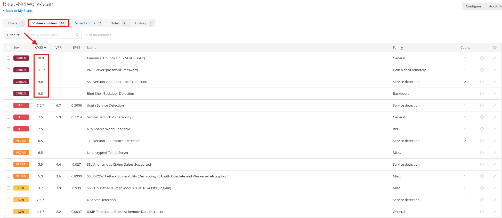
Immediately, several critical vulnerabilities stood out. For this example, I chose to review VNC Server "password" password.
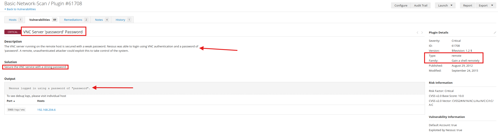
From the vulnerability details page, it became clear that the VNC service running on Metasploitable2 was highly insecure because it was configured with the weak password password. If a malicious actor were to identify this exposed service and attempt authentication using common password guesses or a basic wordlist, they would likely succeed.
In a real-world environment, a finding like this would warrant immediate attention and escalation through the proper process. Depending on the organization, that may involve the vulnerability management team, IT operations, or the security team. In many environments, remediation would most commonly be handled by IT.
After remediation is completed (strong password change), a targeted rescan should be conducted to verify that the issue has truly been resolved.
The next critical finding I reviewed was Bind Shell Backdoor Detection.
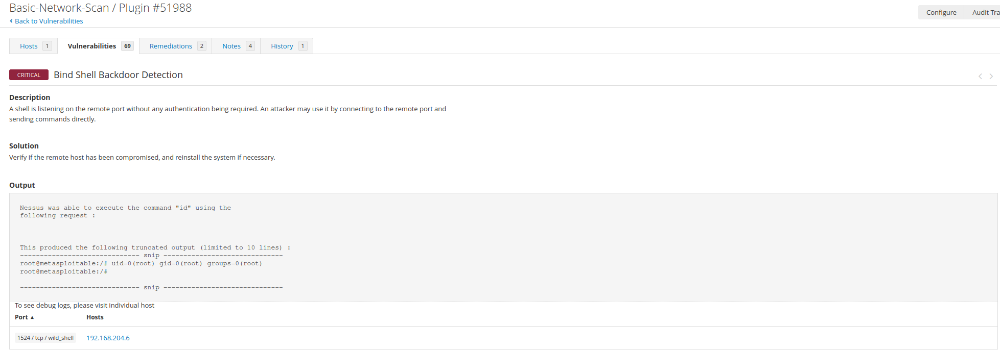
This finding indicates that the target machine has a bind shell backdoor listening for inbound connections. A bind shell opens a port on the compromised system, waits for an incoming connection, and then provides the connecting user with command-line access.
This is correctly classified as critical because, as shown in the vulnerability details, no authentication is required. Any attacker who reaches that port could potentially execute commands directly on the system.
In the Nessus output, it is evident that the id command was executed successfully and returned uid=0(root).
The recommended solution is to verify whether the host has been compromised and, if necessary, rebuild or reinstall the system.
Credentialed Scan
After completing the initial analysis, I moved on to the credentialed scan.
To do this, I clicked into the completed scan, selected More, and made a copy of the existing configuration. I then edited the copied scan to include valid credentials, unlike the original scan.
Once the configuration was updated, I launched the scan just as before.
After it finished, I reviewed the results to compare what Nessus identified when it was able to authenticate to the system.
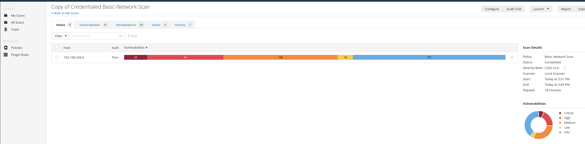
As shown in the dashboard, the credentialed scan produced a total of 471 findings, which is a substantial increase over the 194 findings identified during the non-credentialed scan. This clearly demonstrates the visibility gap between scanning a system externally and scanning it with authenticated access.
This scan also displayed “Auth: Pass”, meaning:
- The scanner had valid credentials (SSH, SMB, or similar)--Password in my case.
- It was able to log into the target system
- It could inspect the host internally rather than relying only on exposed services
That additional level of access allowed Nessus to identify issues such as:
- Missing patches
- Weak internal configurations
- Installed vulnerable software
- Potential local privilege escalation issues
Credentialed vs Non-Credentialed Comparison
| Category | Non-Credentialed Scan | Credentialed Scan |
|---|---|---|
| Total Findings | 194 | 471 |
| Visibility Level | External perspective only | Internal host visibility through authenticated access |
| What Nessus Could Assess | Exposed services, open ports, remotely detectable vulnerabilities, weak externally visible configurations | Installed software, missing patches, local misconfigurations, deeper OS-level and service-level weaknesses |
| Strengths | Useful for identifying attack surface visible to an external or unauthenticated attacker | Provides broader and deeper vulnerability coverage with better remediation insight |
| Limitations | May miss important vulnerabilities that require local inspection | Requires valid credentials and proper access configuration |
| Example Observations | VNC weak password, bind shell backdoor | Shellshock and additional internally discoverable issues |
| Best Use Case | Attack surface validation and unauthenticated exposure assessment | Comprehensive internal vulnerability management and patch validation |
The comparison makes it clear that both scan types are valuable, but they serve different purposes. A non-credentialed scan helps simulate what an external attacker may observe, while a credentialed scan provides a much deeper picture of the host’s actual security posture.
Credentialed Scan Findings
When reviewing the vulnerabilities identified during the credentialed scan, one of the most notable new critical findings was Bash Remote Code Execution (Shellshock), which was not seen previously in the non-credentialed scan.
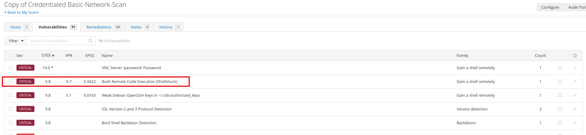
After opening the vulnerability details, it became clear why this issue was classified as critical.
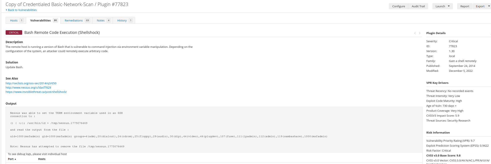
This vulnerability is one of the most well-known and dangerous bugs affecting Linux systems, commonly referred to as Shellshock.
It affects Bash (GNU Bourne Again Shell) and allows attackers to:
- Inject malicious commands into environment variables
- Cause Bash to execute those commands
- Achieve remote code execution (RCE) on the target
In the Nessus output, it is clear that the scanner successfully executed /usr/bin/id, which returned:
uid=1000(msfadmin)Nessus used the following payload:
() { :;}; /usr/bin/id > /tmp/nessus...This is the classic Shellshock exploit syntax:
() { :;};triggers the vulnerability- Anything following it is interpreted and executed as a command
To remediate this vulnerability, the recommended action is to update Bash.
This can be done with:
sudo apt update && sudo apt install --only-upgrade bashThen restart and verify the patch using:
env x='() { :;}; echo vulnerable' bash -c "echo test"
If the system is properly patched, it should not print vulnerable.
After patching, another scan should be performed, and this specific vulnerability should be given priority attention. It should not appear again if remediation has been completed successfully.
Key Takeaways
- Host discovery is an important first step before launching vulnerability assessments across an environment.
- Non-credentialed scans provide useful insight into externally visible exposure, but they do not tell the full story.
- Credentialed scans provide far greater visibility into missing patches, weak configurations, and locally installed vulnerable software.
- Sorting findings by CVSS helps prioritize remediation efforts and focus attention on the most serious risks first.
- Findings such as weak passwords, exposed backdoors, and remotely exploitable vulnerabilities should be escalated quickly and validated through rescanning after remediation.
- This lab clearly demonstrates why organizations benefit from using both authenticated and unauthenticated scans as part of a mature vulnerability management program.
Project Outcomes
By the end of this lab, I successfully deployed Nessus in an isolated environment, validated host communication, discovered live hosts on the subnet, and performed both non-credentialed and credentialed scans against Metasploitable2.
The assessment showed a clear and measurable difference between the two scan types, with the credentialed scan uncovering far more issues and providing deeper insight into the target’s security posture. The lab also reinforced the importance of vulnerability prioritization, remediation validation, and using the appropriate scan type depending on the assessment objective.
Conclusion
This Nessus lab was a practical demonstration of how vulnerability scanning fits into defensive security operations. It showed not only how to configure and launch scans, but also how to interpret results, prioritize critical findings, and think through remediation from an operational perspective.
Most importantly, the lab highlighted the major difference between what can be identified from the outside versus what can be uncovered with authenticated access. While the non-credentialed scan provided meaningful exposure data, the credentialed scan delivered a much more complete assessment of the host. Together, both perspectives provide valuable insight and help build a stronger overall vulnerability management process.